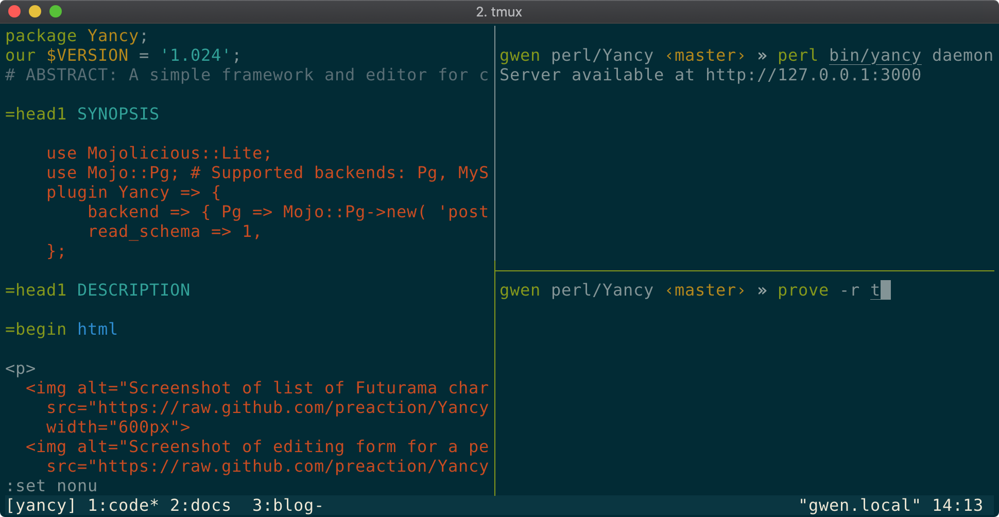
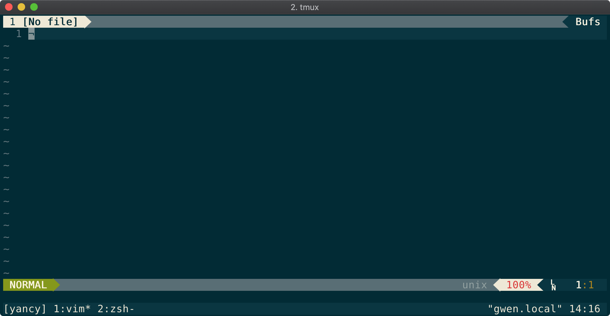
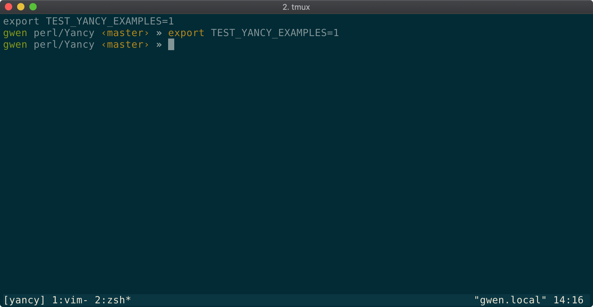
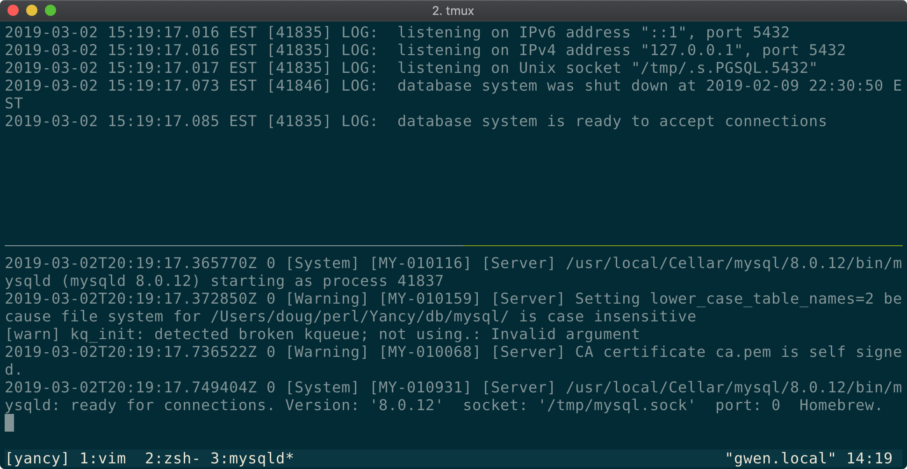

Testing Environment With Tmux

The Yancy CMS for the Mojolicious web framework currently supports three different database systems directly (and even more through the DBIx::Class ORM). As a result, when doing development, I need to have two database daemons running locally, a bunch of different environment variables to tell the tests where those databases are, and a web daemon to test the front-end.
Setting up these daemons is a pain, but I also do not want to run them all the time (to save on my laptop's battery). To me, it's easier to run a database daemon for a specific project than to try to manage all the databases I might need. But that means that every time I want to do some work on Yancy, I need to start up a bunch of things.
Since I do all my development in a terminal window, the Tmux terminal multiplexer has become an extremely useful tool. Using a shell script and Tmux, I can run a single command to set up all the databases, environment variables, and all the tabs I need to get to work quickly.
Tmux allows me to set up multiple "windows" in a single terminal, kind of like tabs in a browser. Each window can then be split into panes horizontally and vertically. Each pane has a program running inside, usually a shell (like bash) that I can run commands in (like vim, my editor). I can do all this by typing commands in the tmux session: Ctrl+B C to create a new window, Ctrl+B % to split the current pane vertically, Ctrl+B " to split the current pane horizontally, etc...

But, I can also interact with Tmux via the tmux command. Everything
I can do by typing in the Tmux session I can do with the tmux command:
tmux new-window creates a new window, tmux split-pane -v splits
a pane vertically, tmux split-pane -h splits a pane horizontally. By
using these commands, I can set up a complex set of windows and panes in
Tmux inside a shell script:
tmux new-session -s yancy -d
tmux new-window -t yancy:2
tmux send-keys -t yancy:1 vim Enter
tmux send-keys -t yancy:2.0 "export TEST_YANCY_EXAMPLES=1" Enter


First, I create a new Tmux session named "yancy" and create a new
window. Then I run vim, my editor, in the first window, and set up an
environment variable in the second window. Next I need to run my
databases. I create a new window to run
Postgres in one pane, and then split that
pane to run MySQL in the other pane.
tmux new-window -t yancy:3 postgres -D ~/perl/Yancy/db/pg
tmux split-window -t yancy:3 mysqld --skip-grant-tables --datadir ~/perl/Yancy/db/mysql

Finally, I need to attach to my session. But also, if my session is already running, I don't want to initialize it again. So, I wrap the entire thing in a shell conditional.
if ! tmux has-session -t yancy; then
tmux new-session -s yancy -d
# ... Initialize the session
fi
tmux attach -t yancy
Now with one command I'm ready to develop! This script is available in the Yancy repository for anyone to use. Tmux makes working on Yancy easy!
Original artwork by Doug Bell (licensed CC-BY-SA 4.0).

Doug Bell
Doug (preaction) is a long time Perl user. He is the current maintainer of CPAN Testers and the author of many CPAN modules including the Statocles blog engine that powers this site.